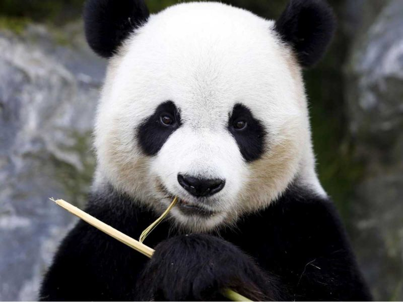

Blogmin
Blog de panditas geniales
Este es el titulo atractivo e interesante del post
Y... este es el párrafo de inicio, donde voy a aprender cosas increíbles que se pueden hacer con ramas

Es habitual ver a los osos panda comer relajadamente sentados en el suelo, con sus piernas traseras estiradas hacia adelante. Aunque den la impresión de ser sedentarios, trepan a los árboles con gran habilidad y son excelentes nadadores.
En la próxima semana más datos sobre los panditas